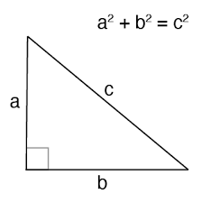

Developed by the Greek mathmatician Pythagoras, the pythagorean theorem allows us to find the hypotenuse of a right triangle with the equation a^2+b^2=c^2 where a and b are legs of the triangle and c is the hypotenuse. We use this theorem subconciously everyday when we want to find the shortest route to a destination because an addition of this theorem is that c is less than a+b. Our modern day society can thank Pythagoras for developing this theorem which is so essential to our everyday life.
I don't know what sadistic mathmatician thought it was necessary for us to know why 2 triangles are the same, but we spent a whole year last year to learn how to do this. We can tell if 2 triangles are congruent if: we can state that all corresponding sides are congruent, 2 corresponding sides with an angle inbetween are congruent, or 2 corresponding angles and any side are congruent. There's no real world applicaition of this but feel free to use it as a party trick to get everyone riled up. Everyone's mind would be blown when you meticulously show how 2 triangles are congruent.
Contending for the spot of public enemy number one for high school kids, Trigonometry has terrorized high schoolers since the dawn of time. This seemingly useless concept allows us to find rations of sides of a right triangle and can additionally be used to find any angle by using unit hypotenuse triangles in the coordinate plane. The 3 main trig rations are sine, opposite/hypotenuse, cosine, adjacent/hypotenuse, tangent, opposite/adjacent. These 3 trig ratios also have their opposite versions(1/trig ratio). The opposite ratios are cosecant, secant, and cotangent respectively. One exampe of a real world application of trigonometry is if you are eating a pizza that is coincedntally triangle and has a right angle and you know one side and one angle, you can use trig ratios to find the rest of the sides and angles so you know about how much pizza you are about to eat